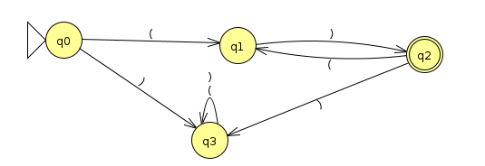

Homework 9: Decidability (18 Points)
Chris Tralie
Overview / Logistics
In this homework we'll explore decidability: the property of a language that guarantees that it is both Turing recognizable and that it will never throw the Turing machine into an infinite loop. In the process, we'll also think about languages that are not decidable.
There are no JFLAP problems on this homework. You should submit a single typed document with the answers to each question. You can use Microsoft Word, LaTeX, or anything else you're comfortable with.
Problem 1 (3 Points)
Consider the following Turing machine M (Click here to download the JFLAP file)

Now consider a universal turing machine H that takes as input <M, s>, where <M> is a string encoding of another turing machine and s is an input, and H accepts if M halts on s and rejects if M loops on s (we know that such a machine can't exist, but for the purposes of this problem, we'll pretend that it does). Assuming a 6-tuple representation of a turing machine (Q, Σ, Γ, δ, q, F), where Σ is the input alphabet and Γ is the tape alphabet, devise examples of the following 3 inputs
- An input where H accepts and M accepts s
- An input where H accepts and M rejects s
- An properly formatted input where H rejects (i.e. M is encoded properly in its string representation as a tuple)
You can encode a transition rule in string format as a tuple
\[ (q_i,a,q_j,b,\{L,S,R\}) \]
which reads a machine in state qi with an a at its head write a b to the tape, transitions to state qj, and either moves left/stays/moves right.
Problem 2 (3 Points)
Prove that the language
B = { < M > | M is a DFA which doesn't accept any binary strings divisible by 3 }
Is decidable. For example, the machine below is in B, since it rejects everything except for the string 1, and 1 is not divisible by 3.

Hint: Recall that the language EDFA(<M>), which accepts if the DFA M does not accept any strings, is decidable (see theorem 4.4 in the book). Use a decider for EDFA as a subroutine to help you in this problem.
Problem 3 (3 Points)
Prove that the language
P = { < M > | M is a DFA over the alphabet Σ={(,)} that accepts at least one string with balanced parentheses }
is decidable. For example, the machine M below, which accepts all of the strings of the form ()()()..., is in P
Hint: Use theorem 4.8 in the book that ECFG is decidable.
Problem 4 (3 Points)
Show that for any infinite language L, L is decidable if and only if some Turing enumerator enumerates L in lexographic order. You may use a high level description of any Turing machines at play. Note that you will have to prove two directions for the if and only if
- If some Turing enumerator enumerates L in lexographic order, then L is decidable
- If L is decidable, then some Turing enumerator enumerates L in lexographic order
As a hint for the first direction, let's consider the language of binary strings with an even number of 0's. This language can be recognized by a DFA, so it's definitely decidable! Here are the first 20 strings that a turing enumerator for this language would print out if it did so in lexographic order
If you didn't know what the language was and you wanted to check if the string 1011 was in this language, how would you do so by just examining the above strings coming out in lexographic order? When would you know that you could reject this string?
Problem 5 (3 Points)
Show that every infinite Turing-recognizable language has an infinite decidable subset. An example of this is Hilbert's 10th problem, which is recognizable and undecidable, but we showed in the last problem set that the language of all univariate integer polynomials with integer roots is decidable, and that language is a subset of the original language.
Hint: Have a look at the proof for Theorem 3.21 (Pg. 153 Sipser 2nd edition) that a language is Turing-recognizable if and only if some enumerator enumerates it. Focus on the second part where we start with a recognizable language and construct an enumerator, then modify this construction to enumerate an infinite language of strings in lexographic order, which is decidable by appealing to your proof in the last problem. Even if you can't figure out the proof for the previous problem, you may use the result in this problem.
Problem 6 (3 Points)
Prove that the language
\[ \{ <M> | M \text{ is a DFA accepting all strings except finitely many} \} \]
Hint: Put yourself in a pumping mindset here, and argue that a DFA with k states rejects infinitely many strings if and only if it rejects a string with a length between k and 2k